我想学潜水，想买个运动相机，推荐一下
综合 87 篇潜水装备笔记
学潜水选相机，其实就看三点：防水靠不靠谱、拍出来颜色好不好、操作够不够简单。防抖、续航这些主流机型差距不大，不用纠结。下面按适合潜水新手的程度，介绍 3 款。懂我懂行

DJI Osmo Action 5 Pro
★4.8

Insta360 Ace Pro 2
★4.7

GoPro Hero 13 Black
★4.6
⭐ 新手首选，一台全能 懂行有判断
DJI Osmo Action 5 Pro
裸机防水 20m · 防抖强 · 续航 160min
¥1,999–2,299
★4.887 人推荐
新手闭眼入，最省心的一台。
- 裸机防水 20 米，不用买壳直接下水"，绕开进水这个头号风险，深度也够绝大多数休闲潜水。
"带 Action 去马尔代夫，裸机直接下水，20 米完全没问题，省了买防水壳的钱和漏水的担心"
- 防抖、续航同价位最强"，装上电池开机就能拍，不用折腾。
- 唯一短板是水下直出偏蓝绿"，水质一般时得简单后期，App 一拉基本就回来了。
"新手第一台就买它，开机即拍不用折腾，防抖很稳。水下发蓝用 App 拉一下就回来了，我发圈基本不用细修"
放几张 Action 5 Pro 的水下实拍给你参考，直出大概是这个观感（都没后期）：真实
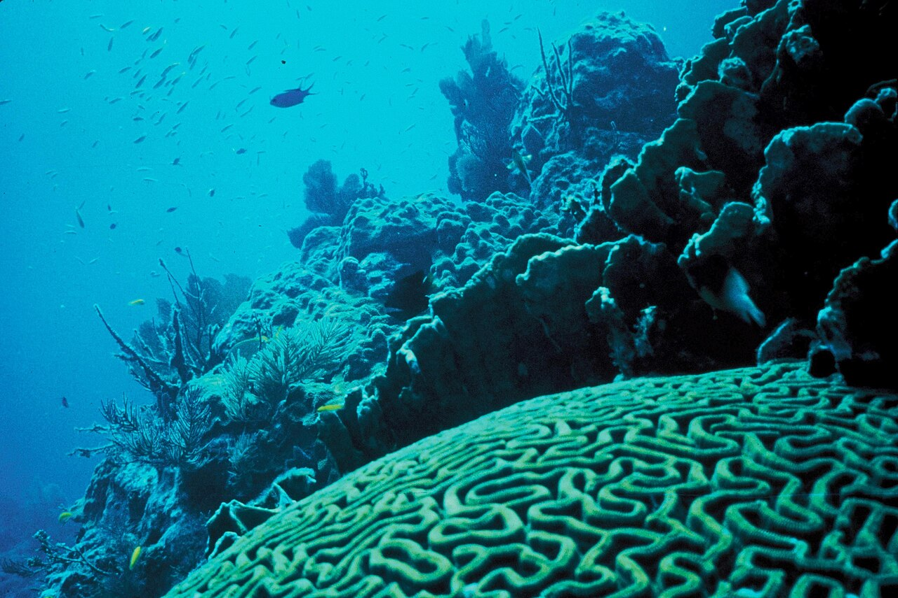
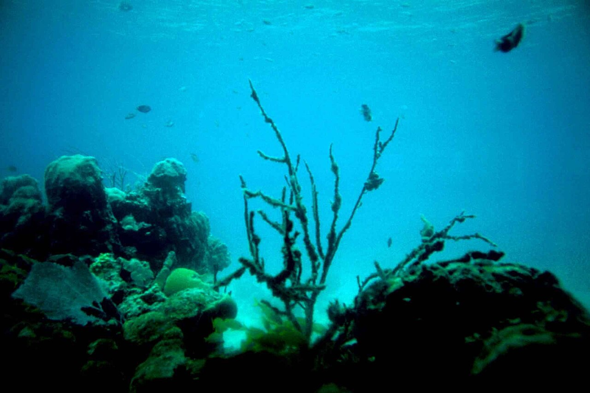
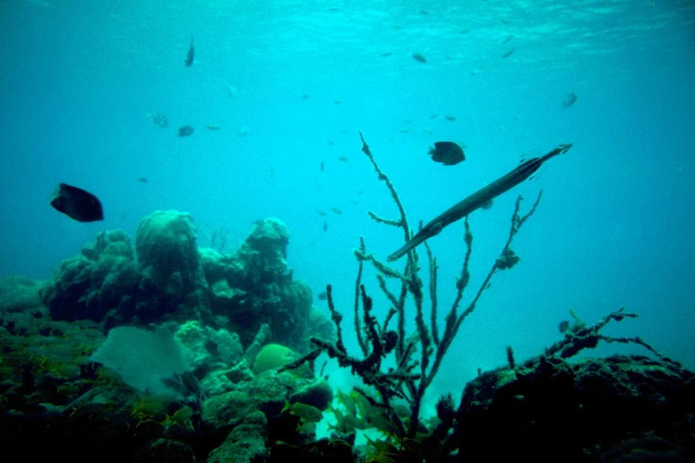
🎬 你也可以看看这两台 懂行
除了潜水还有别的侧重，这两台各有更擅长的场景，也各有一条短板：
Insta360 Ace Pro 2
亮点是徕卡调色直出好看、不用后期，翻转屏方便水面自拍，除了潜水还能当旅行 vlog 机；短板是裸机下潜深度只有 12 米，想要深潜必须加装外壳。
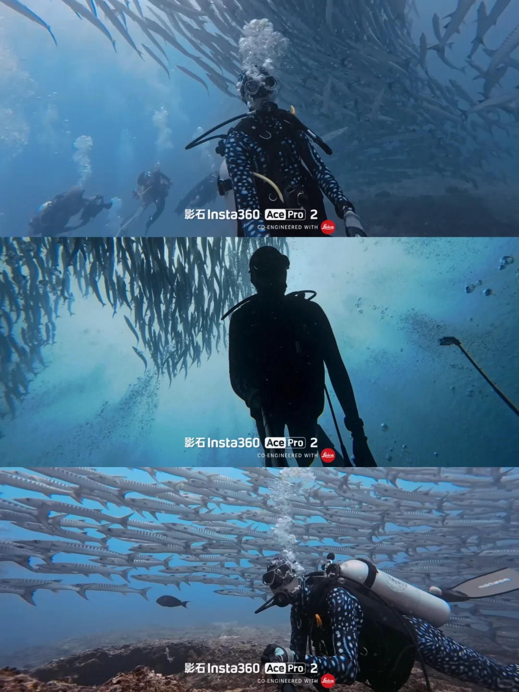
GoPro Hero 13 Black
亮点是全球潜店配件好买好换、坏了好修，出国最省心；短板是裸机下潜只有 10 米，深潜必须配壳，色彩偏冷需要后期调整。
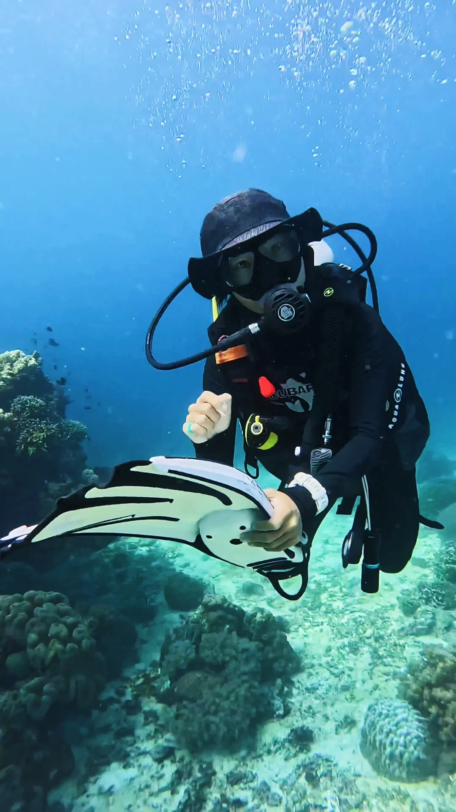
🎯 其他可以了解的潜水相机 懂行
下面这几款有各自的特点和适配的特定需求，感兴趣的可以了解：
- 更强低光画质：DJI Action 6，1/1.1" 大底、8K，愿意加预算就上。裸机 20m，¥2,998。
- 360° 全景：Insta360 X4/X5，8K 360° 自由构图。裸机浅，水肺要配壳。
- 微距小生物：OM System TG-7，1cm 微距、三防，拍海兔神器。裸机 15m，暗光弱。
- 预算够用就行：上代 Action 4，裸机 18m，现价约 ¥1,300，性价比高。
📌 一句话总结 懂我有判断
纯潜水、图省心 → Action 5 Pro，闭眼入。
还想拍 vlog 或常出国潜 → Ace Pro 2 / GoPro Hero 13。
有微距、360°、超低预算等特殊玩法 → 看上面对应款。
拿不准 → 可以先租一个，试过再决定买不买。
你主要玩浮潜还是水肺？预算大概多少？告诉我你的情况，我可以帮你选得更具体。懂我
内容由 AI 生成 · 综合小红书真人潜水装备笔记
"
DJI Osmo Action 5 Pro
"
✕
我的收藏
✕
DJI Osmo Action 5 Pro
¥2,199-2,599
★4.8 (892)
GoPro Hero 13 Black
¥2,498-3,198
★4.6 (2.3k)
Insta360 Ace Pro 2
¥2,299-2,799
★4.7 (940)
DJI Osmo Action 5 Pro
1 / 5
DJI Osmo Action 5 Pro
参考价¥2,199-2,599
推荐值90.2%AI 总结
仙品
892 人点评 ›
基本介绍
大疆 2024 下半年发布的旗舰运动相机，主打 1/1.3" 大底传感器和低光表现，裸机 20 米防水 + 240 分钟续航是同价位段的天花板。
传感器1/1.3" CMOS
最高视频4K120
原生防水20 米
电池1950 mAh · 约 240 min
用户评价
支持 88%
12%
夜
@夜骑党 · 笔记 · 1.4k 赞
晚上骑车拍视频完全够用，1/1.3 大底不是盖的，路灯下画面很干净，噪点控制比 GoPro 强太多了
潜
@潜水日志 · 评论 · 876 赞
水下 10 米光线弱的环境拍出来的画面清晰度真的惊到我了，颜色也很准
星
@星空延时 · 笔记 · 723 赞
拿来拍星空延时，ISO 拉到 6400 画面还能用，运动相机里真的独一档
室
@室内运动 · 评论 · 543 赞
在室内篮球馆拍也很清楚，之前用 GoPro 12 拍出来全是噪点糊成一片
日
@日落追光 · 笔记 · 412 赞
黄昏拍冲浪那个宽容度太舒服了，暗部细节拉回来一点不费劲
对
@对比评测 · 评论 · 134 赞
比 GoPro 好一点但也别神话，极暗环境还是得上大相机
像
@像素控 · 评论 · 98 赞
大底带来低光好但也带来了果冻效应，高速运动场景偶尔会有晃动变形
白
@白天够用 · 评论 · 76 赞
白天画质差距其实很小，低光场景我也很少用到，这个卖点对我没意义
支持 92%
8%
骑
@骑行 200km · 笔记 · 987 赞
4K30 实测拍了将近 4 小时还有电，长途骑行一块电池撑一天完全没问题
滑
@滑雪 vlog · 评论 · 654 赞
零下 15 度雪场也能撑 2 小时+，低温续航比上一代强很多
摩
@摩旅记录 · 笔记 · 543 赞
川藏线全程挂车头拍，一块电池从早拍到午饭，1950mAh 真的够大
钓
@钓鱼佬 · 评论 · 378 赞
挂竿上拍一下午完全没问题，比之前用的 Action 4 多撑一个多小时
徒
@徒步三天 · 笔记 · 267 赞
带了三块电池走了三天重装徒步，全程录延时加 vlog 电量绰绰有余
充
@充电焦虑 · 评论 · 87 赞
续航长但充电也慢，满充要一个半小时，多买块电池换着用
高
@高帧率党 · 评论 · 65 赞
4K120 录的话一个小时就没电了，高帧率下续航缩水很厉害
冬
@冬天拍摄 · 评论 · 54 赞
零下 20 度以下还是不行，电量掉得特别快，得贴暖宝宝
认同 65%
35%
配
@配件党 · 笔记 · 342 赞
想买个兔笼都没几家做，只能用大疆自家的，贵还选择少
潜
@潜水装备 · 评论 · 234 赞
潜水壳选择太少了，GoPro 随便一搜一大堆，DJI 的就两三款还贵
车
@车载玩家 · 笔记 · 189 赞
想买个吸盘支架都得等第三方慢慢出，GoPro 的生态真的没法比
头
@头盔固定 · 评论 · 156 赞
磁吸底座虽然方便但第三方做的太少，只有官方的选择
自
@自行车架 · 评论 · 112 赞
自行车固定夹只有大疆官方一款，淘宝找了好久才找到个山寨的
转
@转接达人 · 评论 · 256 赞
买个 GoPro 转接件就行了，GoPro 的配件基本都能用，几十块钱搞定
官
@官方够用 · 评论 · 178 赞
大疆官方出的几个配件质量都很好，够用了不需要那么多花里胡哨的
3D
@3D 打印 · 评论 · 134 赞
自己建模打印就行了，网上开源模型越来越多，完全不是问题
认同 57%
43%
热
@热到烫手 · 笔记 · 189 赞
夏天 4K60 录半小时就烫得不行，自动降帧了好几次
沙
@沙漠越野 · 笔记 · 167 赞
新疆 40 度沙漠拍了 20 分钟就过热保护了，直接关机，耽误事
跑
@跑步记录 · 评论 · 134 赞
夏天戴头上跑步录 4K 半小时机身特别烫，有点担心安全
车
@车内记录 · 评论 · 98 赞
放车里当行车记录仪，夏天太阳直晒 10 分钟就过热了，不实用
延
@延时摄影 · 笔记 · 76 赞
拍延时需要长时间运行，夏天户外必发热降帧，只能等冬天拍
正
@正常使用 · 评论 · 145 赞
4K30 正常拍完全不热，只有 4K120 长时间才会，日常够用
水
@水下不热 · 评论 · 112 赞
潜水的时候水本身就散热，完全不存在过热问题，水下随便录
固
@固件更新 · 评论 · 87 赞
最新固件优化过了好很多，之前确实烫，现在 4K60 撑 40 分钟没问题
购买渠道
⭐ 已加入决赛圈›
DJI Action 5 Pro 潜水用值得入手吗？
综合 124 篇真人水下实拍帖
潜水用的话，Action 5 Pro 在运动相机里确实是第一梯队的选择，值得入。因为它在防水、水下画质和后期这三个潜水场景最重要的能力上表现都很不错。有判断懂行
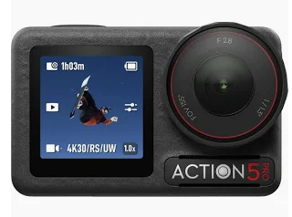
DJI Osmo Action 5 Pro
裸机防水 20m · 防抖强 · 续航 160min
¥1,999–2,299
★4.8124 人评价
🌊 防水能力足够可靠，满足绝大多数潜水场景 懂行
对于潜水来说，画质再好，设备一旦进水，就没有意义。防水能力是潜水相机最基本的门槛。
- 裸机防水 20 米，运动相机里最高档。GoPro Hero 13 裸机只有 10 米，超过就必须加防水壳W5W12
- 浮潜、自由潜裸机直接用，休闲水肺也基本够
- 加上官方防水壳可以到 60 米，覆盖绝大多数潜水场景
不过有个风险要提前知道：部分批次充电口盖子偏松，有用户浮潜就进水了。下海建议带防水壳，泳池裸机没太大问题。真实
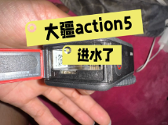
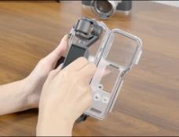
"电池盖冲开了吧，批次问题，有些电池盖不够紧，很容易冲开。"
📷 水下画质表现出色 懂行
对于潜水来说，水下画质也是决定一台相机值不值得买的核心因素。这块 Action 5 Pro 底子不错：
- 1/1.3 英寸大底 + f/2.8 光圈：深水弱光下优势明显，同等深度比小底机噪点少很多
- 10-bit 色深 + D-Log M：后期调色空间大，水下偏色问题靠后期能救回来
- 4K/120fps：水下常用 4K/60fps 拍鱼群不拖影，还能做慢动作
看看实际水下出片效果：
但有一个所有用户都在强调的事：真实
- 默认参数拍水下大概率是废片，默认 1080p/30fps + ISO 无上限，拍出来蓝蒙蒙、全是噪点
- 必须在岸上提前调好参数，因为水下触屏基本失灵
🎨 后期处理方便省心 懂我
水下素材几乎都需要色彩还原，后期是否省心直接影响使用体验。Action 5 Pro 在这块做了专门优化：
- 自动白平衡准：机身内置色温传感器，能实时感知水下色温变化，白平衡水下表现比较准确
- 一键还原色彩：DJI Mimo app 自带"水下色彩还原"功能，一键把偏蓝偏绿的画面拉回来，不会调色也能出不错的成片。有用户对比过，效果很不错
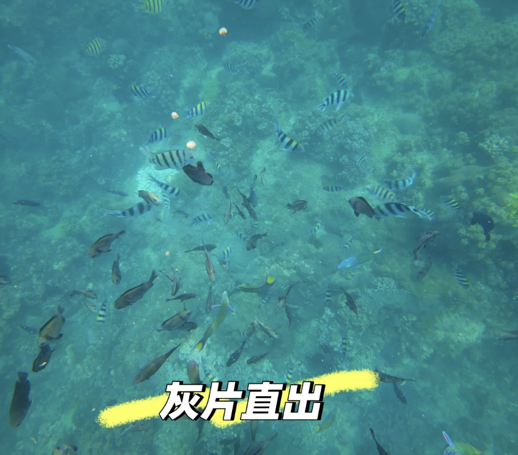
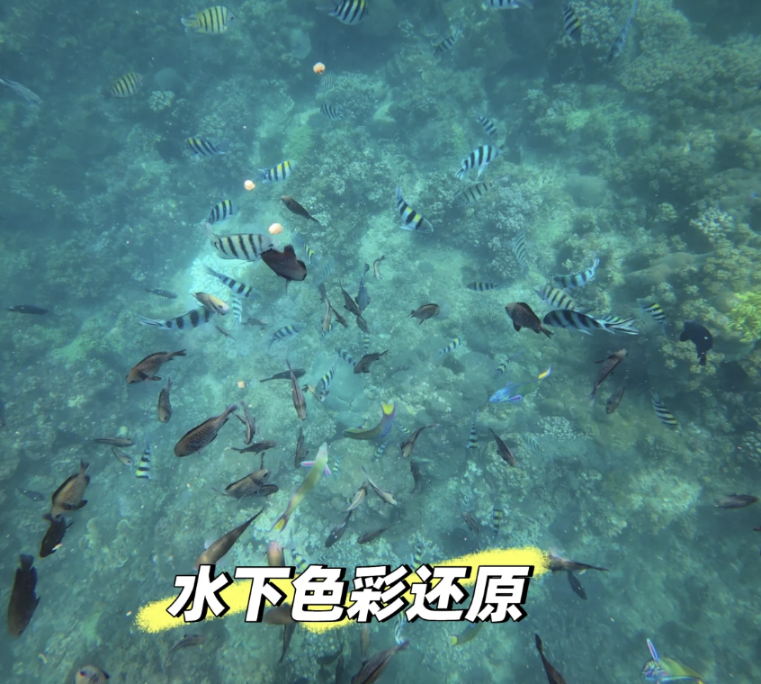
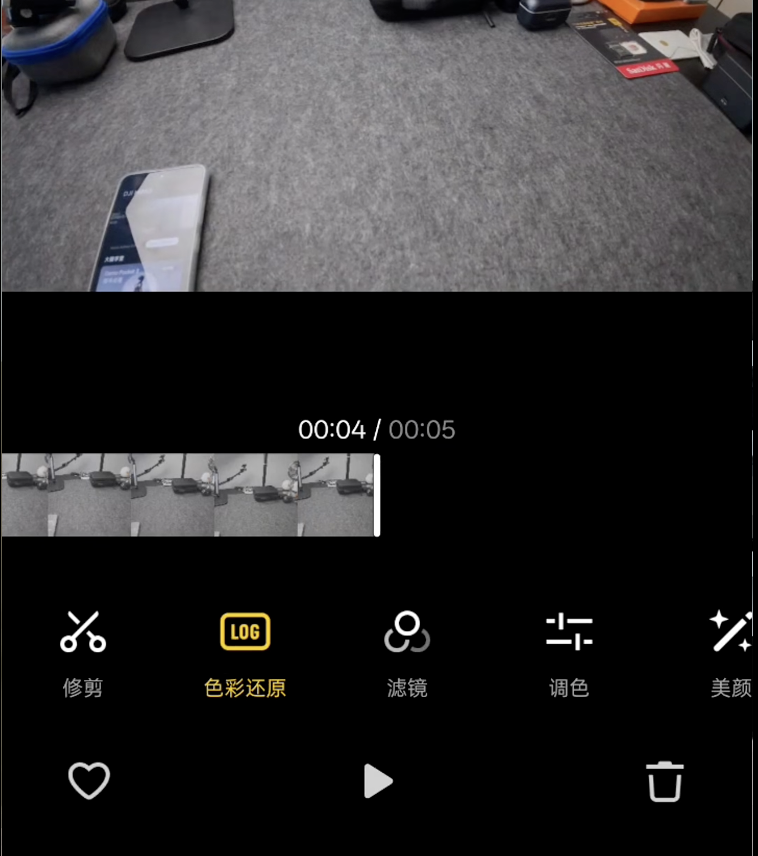
和 Insta360 Ace Pro 2 对比：浅水区影石直出色彩更讨喜，但深水区 Action 5 Pro 大光圈优势更明显，对水中悬浮颗粒的处理也更干净。懂行
🤿 额外加分项
除了潜水最重要的三项能力之外，Action 5 Pro 还有不少专门针对潜水设计的功能。
- 内置水压计：通过 EN13319 潜水设备认证，实时显示下潜深度和时长
- 出入水自动启停：入水自动开始录制，出水自动停止，水下不用操心按钮
- 深度仪表盘：后期可以把深度数据叠加到成片上，潜水 vlog 很实用
📊 大家怎么评价 真实
除了潜水表现，大家反复提到的更多是这些日常体验：
好评98人表示赞同 ›
开机就能拍：不用折腾设置，默认参数直接上手
防抖依旧很稳：走着拍、骑车拍都不晃，水下也稳
续航不焦虑：一天拍下来不用换电池，1950mAh 够用
"续航是最惊喜的，一天拍下来不用换电池。拍完几分钟手机里就能剪，发圈很方便"
系统稳定：基本没遇到卡顿死机，比上代靠谱
导素材方便：DJI Mimo 拍完几分钟就能剪，发圈很快
差评26人吐槽过 ›
直出偏色：水下和阴天直出颜色偏蓝偏绿，需要简单调色
"默认设置就很好用了，大多数时候直接开机就能拍。水下偏蓝绿是真的，但 App 一拉白平衡就回来了，不算大问题"
你也可以看看这些 懂行
- 预算更高、追求画质：Action 6，大底、低光表现进一步提升，还支持 8K。
- 经常自拍、拍 Vlog：Insta360 Ace Pro 2，翻转屏体验更好。
- 已经有 GoPro 全套配件：Hero 13 的迁移成本更低。
📌 tips 懂我有判断
冲着潜水、图省心 → 闭眼入 Action 5 Pro。
第一次潜水、还没确定会不会继续 → 先租一台体验一次，花一两百块拍一潜比看评测更有用。懂我
告诉我你的预算和主要拍摄场景，我帮你判断它是不是最合适的选择。懂我
内容由 AI 生成 · 综合小红书真人水下实拍
潜水拍摄，DJI Action 5 Pro 和 Insta360 Ace Pro 2 选哪个？
综合 156 篇真人对比实测
潜水为主，选 DJI Action 5 Pro。懂我有判断
原因主要有以下几点：
1. 原生防水更强 懂行
DJI Action 5 Pro胜
裸机 20 米
防水性能
vs
Insta360 Ace Pro 2
裸机 12 米
浮潜两台都够用，但自由潜或水肺潜时 DJI 的 20 米裸机防水安全余量更大，不用配壳就能直接下水。
2. 水下色彩更稳定 懂行
DJI Action 5 Pro胜
★★★★★★★★★★
水下色彩VS
Insta360 Ace Pro 2
★★★★★★★★★★
实拍
±200 K
色温偏差
±600 K
92%
色彩还原
76%
41人好评
›
口碑
28人好评
›
DJI 的 白平衡更稳、蓝绿偏色控制更自然，连续拍摄画面一致性好，后期调色轻松不少。Insta360 徕卡调色直出好看，但水下偶尔偏色。
3. 防抖表现优秀 懂行
DJI Action 5 Pro胜
RockSteady 3.0+
水下防抖
vs
Insta360 Ace Pro 2
FlowState
潜水时人一直在漂浮、摆动，DJI 的 水下防抖属于第一梯队，画面很稳。Insta360 陆地更强，但水下大动作偶尔抖。
4. 续航更长 懂行
DJI Action 5 Pro胜
★★★★★★★★★★
续航VS
Insta360 Ace Pro 2
★★★★★★★★★★
1950 mAh约 240 分钟
电池
1800 mAh约 150 分钟
温
散热
偏热
Type-C 快充边充边录
充电
Type-C不支持边充边录
52人好评
›
口碑
19人好评
›
潜水不像骑车，不能随时换电池。DJI 续航碾压——240 分钟 vs 150 分钟，多出 60%。还支持边充边录，长时间固定机位拍摄更实用。Insta360 散热问题在 4K60 以上长时间录制时比较明显。
Ace Pro 2 也有优势
- 夜景、低光略胜：Leica 调校加上算法，在傍晚、阴天、洞穴、船舱等低光环境下细节通常比 DJI 更好。如果你很多时候在能见度较差、水比较暗的环境拍摄，它有一定优势。
- 翻转屏：自拍、Vlog 非常方便，但潜水时其实翻转屏使用频率没有陆地高。
👥 好多人也是这么选的 真实
"两台都买过，Ace Pro 2 陆地上确实好用，但水下还是 Action 5 Pro 省心太多，裸机直接下不用想壳的事"
"学员问我推荐哪台，我统一说 DJI。不是说 Insta360 不好，是壳这个东西新手容易装不到位，漏水了相机直接报废"
"店里租赁机全换成 Action 5 Pro 了，续航长、防水深、客人自己就会用，售后问题少了一大半"
🧭 按你的情况选 懂我有判断
新手潜水、想省心不折腾，或预算有限只浮潜→Action 5 Pro
喜欢自拍 vlog、重视暗光画质→Ace Pro 2
告诉我你的使用场景和预算，我帮你做最终决定。懂我
内容由 AI 生成 · 综合小红书真人对比实测
潜水用的运动相机怎么选？
综合 94 篇潜水摄影攻略
选潜水运动相机只需要按 防水能力 → 拍摄需求 → 后期习惯 三步选择，就能快速找到适合自己的机型。懂行
🌊 第一步：按潜水方式选防水能力 懂我
防水能力决定了相机是否适合你的潜水方式，也是最先需要确认的参数。
浮潜、浅水自由潜（10 米以内）：选择支持 10–12 米裸机防水 的运动相机即可，能够满足大多数浮潜和浅水使用场景。如果偶尔会潜得更深，可以搭配防水壳使用。
"能裸机下水，就尽量别装壳，少一个环节，就少一个进水风险。"
自由潜、水肺潜水（20 米左右）：建议选择 20 米左右裸机防水 的机型，可以覆盖绝大多数休闲自由潜和水肺潜水场景，不需要频繁安装防水壳，使用更方便，也降低了漏水风险。
同时关注续航能力：一次潜水通常持续 40–60 分钟。开启 4K、高帧率或防抖后，实际续航会进一步缩短，因此建议选择一块电池能够拍完整趟潜水的机型，避免中途没电影响拍摄。真实
💡 第二步：根据拍摄对象决定配置 懂我
不同的拍摄内容，对相机的要求并不一样。
如果主要拍摄珊瑚礁、沉船等大场景，建议优先关注广角镜头、防抖性能和 4K60fps 以上视频规格。广角能容纳更多环境，防抖可以减少游动和海流带来的画面晃动，而更高的视频规格也方便后期裁切和二次创作。
如果经常拍海兔、海马等小型海洋生物，建议重点关注最近对焦距离、微距能力和传感器尺寸。其中，最近对焦距离往往比像素更重要，只有能够贴近主体，才能真正拍清细节；而更大的传感器也能在水下暗光环境中获得更干净的画面和更自然的色彩。真实
📋 第三步：按后期习惯选择机型 懂我
拍完直接分享：如果平时只是记录潜水生活，希望拍完直接发，优先选择色彩直出好、自动白平衡稳定的机型，基本不用花时间处理照片和视频。
有剪辑调色习惯：如果希望获得更好的画质和更大的后期空间，则可以选择支持 Log 视频或 RAW 照片 的机型，后期调整的自由度会更高。
如果你大概知道自己的潜水方式和预算，我可以根据你的需求具体帮你选几款产品。懂我
内容由 AI 生成 · 综合小红书真人潜水摄影攻略
学生党有哪些平价好用的眼线笔？
综合 213 篇学生党眼妆笔记
学生党买眼线笔，平价其实不是难点，市面上已经有很多成熟产品。真正要挑的是，哪一支真正好用。懂我
好用这件事，拆开来看就是类型、持妆、顺滑度、好控笔四个维度，从站内大量真人测评里筛下来，排序是这样的。懂行
眼线笔分胶笔和液笔两大类。胶笔更好上手，所以我优先推荐这些产品。有判断
🥇 最推荐：与夏集眼线胶笔（约 10 元/支）懂行有判断
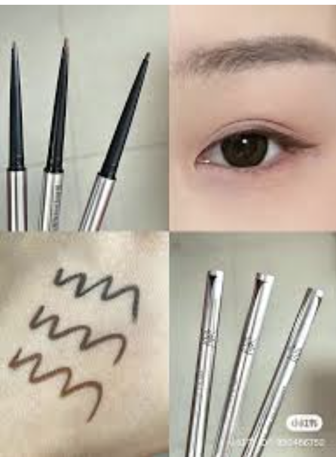
三个维度综合最稳的一支。
- 持妆：眼头眼尾基本不怎么晕，实测持妆 4.5 星水平。就算油皮微晕，棕色也只是自然的淡烟熏感，不会脏"
- 顺滑：在平价胶笔里几乎是天花板，不管手上还是眼皮上都很丝滑，4.5 星
- 好控制：极细小圆头，新手很好掌握，用久了也不会变粗变难用
额外加分项是它不太容易断——平价胶笔的通病就是断，与夏集在这点上明显好于同价位竞品。真实
🥈 其次：佩冉眼线胶笔（活动价约 10 元/支）
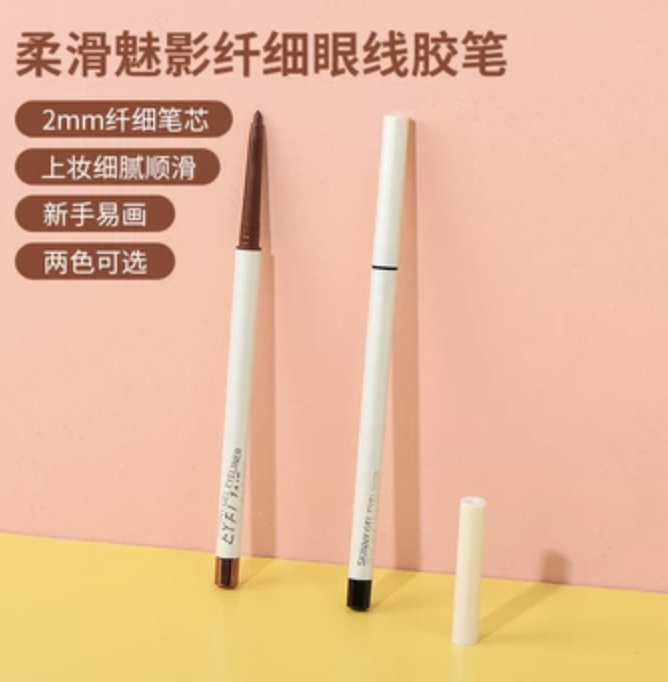
持妆力是所有平价胶笔里最强的。
- 持妆：防晕能力一骑绝尘，画卧蚕线一整天都不掉，蹭都蹭不掉"
- 顺滑：顺滑度不错，上色流畅不结块
- 好控制：笔头偏细，精准度可以
但有个明显短板：克数太小，消耗极快，有人说画几次就没了。换算下来单克价格并不便宜。容易断也是高频吐槽。所以排在与夏集之后——好用是真好用，但费得也是真快。真实
🥉 也值得试：名创优品眼线胶笔（约 9.9 元/支）
被提到次数最多的平价胶笔，但口碑有明显分化。
- 持妆：争议最大的一项。干皮、北方用户普遍觉得一整天不晕；油皮和南方潮湿地区有不少人反馈会晕成熊猫眼"
- 顺滑：中等水平，有人觉得还行，也有人觉得不够丝滑，上色需要稍微用力"
- 好控制：棕色对新手友好，颜色浅画错了容易修正，画下至也好用
总结就是：它是个合格的练手选项，但不是所有人都能用得稳。如果你在比较干的地区、定妆习惯做得到位，9.9 元确实超值；如果眼皮容易出油，建议直接上与夏集。懂我
以上三支都是胶笔。如果你已经画过几次、手比较稳了，可以往液笔升级——持妆和精细度会再上一个台阶：
🥇 进阶首选：名创优品小金管眼线液笔（约 10-15 元/支）懂行有判断
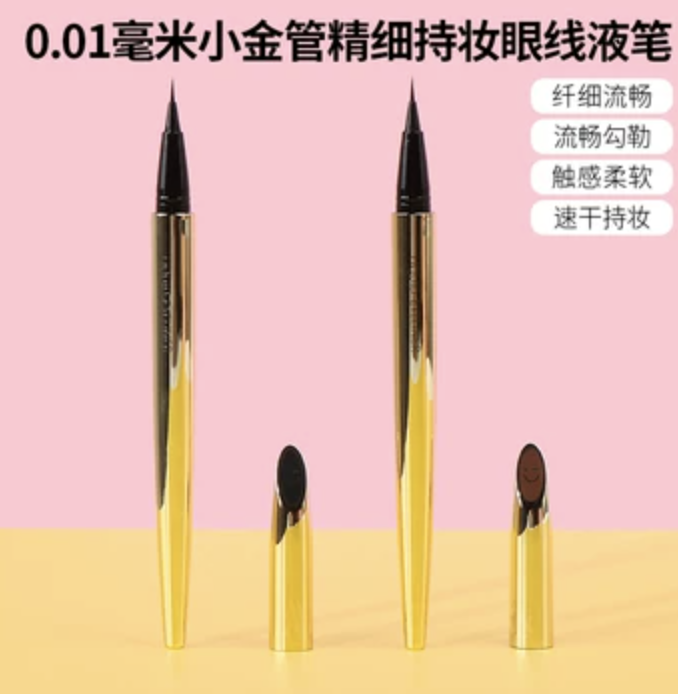
名创的液笔口碑还不错。
- 持妆：成膜后防水防汗，有人说"妆都哭掉了眼线还在"。油皮也有不少正面反馈"
- 顺滑：出水流畅不断墨，不会出现画到一半没颜色的情况"
- 好控制：笔头不是极细款，稍有粗度，反而让画眼尾更好操控，新手不容易画飞
"超级细超级持久，油皮完全不会晕。一根可以用很久，只要15R。"
推荐买棕色，温柔自然，黑色出水量偏大、画粗了容易显凶。懂我
🥈 其次：橘朵弯头眼线液笔（约 20-30 元/支）
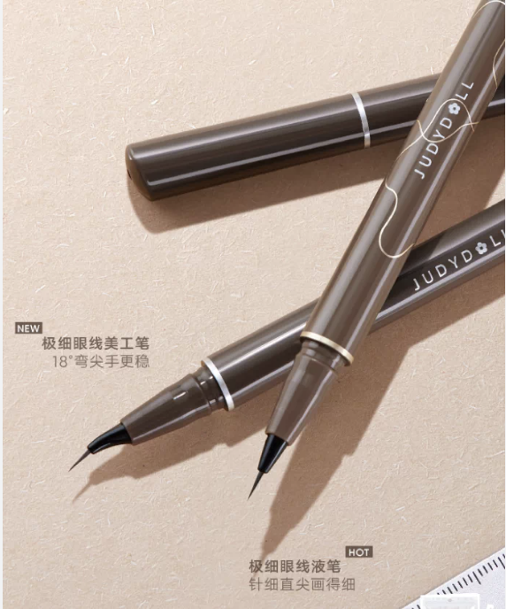
控制力维度的天花板，专为手抖星人设计。
- 持妆：防水防油，夏天出汗一天没晕"
- 顺滑：出水顺畅，不断墨不炸毛
- 好控制：18 度弯头设计是最大亮点——笔尖贴着眼尾弧度刚好能借力，手再抖都不容易画歪。笔尖超细，画下睫毛也很稳
价格比名创贵一点，但如果你属于"一画眼线手就开始哆嗦"的类型，这支的弯头设计值这个差价。懂我
🥉 经典：Kiss Me 眼线液笔（约 70 元/支）
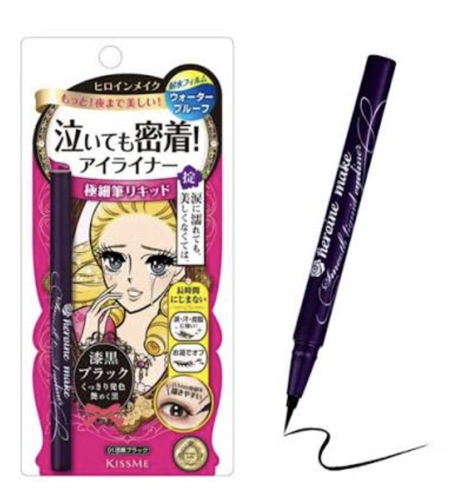
老牌选手，三个维度都没有短板。
- 持妆：不晕不断墨，持久度口碑一直很稳
- 顺滑：丝滑流畅，新手画出来也不会崎岖"
- 好控制：笔头细度适中，出水均匀
在平价液笔里属于价格偏上限的，但胜在品控稳定、几乎不踩雷。如果预算多 10-20 块，想买个省心不折腾的，它是最保险的选择。注意：它家胶笔口碑很差，别搞混了，只推荐液笔。真实
📌 一句话怎么选 懂我有判断
🥇 想买胶笔 → 与夏集眼线胶笔
✨ 想买液笔 → 名创优品小金管眼线液笔
告诉我你的肤质、化妆经验和预算，我帮你直接选最适合的那一支。懂我
内容由 AI 生成 · 综合小红书真人眼妆测评笔记
kissme眼线液笔容易晕妆吗？
综合 347 篇真人持妆实测
不太容易晕妆。懂我有判断
Kissme 奇士美眼线液笔
极细 0.1mm 笔头 · 持妆 12h · 温水可卸 · 防水防汗
¥79
★4.8分5.1k 人推荐
KISS ME（花漾美姬）眼线液笔整体属于比较持久、防水防汗的一类，正常肤质和大多数混油皮日常使用都比较稳，不容易因为出汗或轻微出油就晕开。懂行
不过如果是油眼皮、眼周特别容易出油，或者画在内眼线、下眼睑的位置，到了后期还是可能会有一点晕染。真实
建议画之前先做好眼皮打底或轻扫一层散粉，持妆效果会更好。懂行
💬 用过的人怎么说 真实
混油皮上班族
♡ 3,120
"通勤一整天完全不晕，戴口罩也没问题。唯一一次化是去蹦迪出了巨多汗，内眼线有一点点淡，外眼线和眼尾完全没事"
回购三年的老用户
♡ 1,890
"外眼线真的铁，哭完都还在。内眼线如果不定妆确实会淡一点，但不至于晕成熊猫眼"
大油皮学生党
♡ 2,450
"我是那种眼皮出油特别厉害的，之前用别的牌子下午必晕。换了 Kissme 之后好很多，但内眼线还是要先扫一层散粉才稳"
告诉我你的肤质和日常妆容习惯，我帮你判断它适不适合你。懂我
内容由 AI 生成 · 综合小红书真人持妆实测
橘朵和kissme眼线液笔选哪个？油皮
综合 189 篇真人对比测评
油皮的话，选 kissme 更稳。核心差距就在持妆上。懂我有判断
油皮最怕的是出油晕染，kissme 在这方面口碑很不错。懂行
大量油皮用户反馈带妆一整天不晕，有人六年没换过别的，有油皮+内双用户说试完一圈最后只认它。真实
"小内双➕油皮，就这个不晕，基本已经放弃了其他任何尝试。"
而橘朵的油皮持妆反馈分歧大。真实
有人觉得带妆 8 小时没问题，也有人反馈 4-5 小时就开始晕。另外，橘朵的出墨稳定性也被吐槽过，偶尔会突然滴一大滴墨翻车。
"晚上回宿舍就晕了一半了，有点点熊猫眼。"
其他可以参考的点
- 价格：橘朵 20–30 元左右，kissme 70–80 元
- 笔头：kissme 0.1mm 极细笔头画下睫毛和内眼线更好控制，橘朵稍粗一点
内容由 AI 生成 · 综合小红书真人对比测评
油皮怎么选眼线笔？
综合 276 篇油皮眼妆攻略
油皮选眼线笔，不是越防水越好，而是先想清楚你最想解决什么问题。很多人一味追求"最持妆"，其实未必是最适合自己的。懂行懂我
① 如果你最怕脱妆，先别急着换眼线笔 懂行
油皮确实更容易晕妆，但脱妆不完全是眼线笔的问题。
如果只是下午开始轻微晕染，可以先试试：
- 眼部打底
- 画完后轻压一层散粉
- 避免乳霜型眼霜蹭到眼尾
这些方法往往就能明显提升持妆。如果做了这些还是容易晕，再优先选择防皮脂、成膜快的眼线液笔。
大油田通勤族
♡ 2,870
"之前一直以为是眼线笔不行，后来用了眼部打底再画，同一支笔多撑了三四个小时。很多时候不是笔的问题"
② 如果你很在意出油，就重点看这几个点 懂行真实
油皮真正要看的不是"防水"，而是：
- 是否防皮脂（Oil Proof）
- 是否速干成膜
- 是否防汗
很多产品宣传防水，但皮脂才是油皮眼线晕开的主要原因，所以防皮脂比防水更重要。
混油皮研究生
♡ 1,540
"买了三支都标防水的，夏天照晕不误。后来特意找了一支写防皮脂的，真的就不晕了。防水和防油完全是两回事"
③ 再根据你的化妆习惯选类型 懂我
- 想要最好画、新手容易成功：优先选胶笔，画内眼线和填睫毛根部都更轻松
- 想要最持妆、通勤一天不补妆：优先选液笔，更适合油皮日常
- 想画自然妆：可以选棕色，容错率更高
- 喜欢干净利落的妆感：黑色会更有存在感
⚠️ 油皮一定要知道的 3 个真相 懂行真实
- 防水≠防油，有没有防皮脂更重要
- 内眼线本来就是最容易掉的部位，不要期待一支眼线笔完全解决
- 选对产品只能解决一部分问题，眼部打底和定妆同样会影响持妆表现
💬 大家讨论最多的几款眼线笔是 Kiss Me、橘朵、UZU、花知晓。如果你告诉我你的情况，我可以具体帮你选选：懂我
内容由 AI 生成 · 综合小红书真人油皮眼妆攻略
单板滑雪买雪板，有哪些值得买的入门款？
综合 156 篇入门雪板测评笔记
滑雪入门买第一块单板，真正要看的是这三点：懂我懂行
- 好不好上手：板子偏软、板型容错高，换刃才省力、不容易卡刃摔跤；太硬的板新手根本压不动。
- 耐不耐用：但也别一味求软，太软的板你学会换刃后很快就嫌它撑不住、想换。挑「偏软但不过软」的能多陪你几年。
- 尺寸对不对：长度看身高体重（站直板头在下巴到鼻子之间），脚大（44 码以上）要专门挑加宽版，不然转弯脚尖脚跟蹭雪。这个比纠结型号更要紧。
高阶参数先不用管，下面按你的水平推荐几款。懂我懂行
⭐ 新手首选，一块全能 懂行有判断
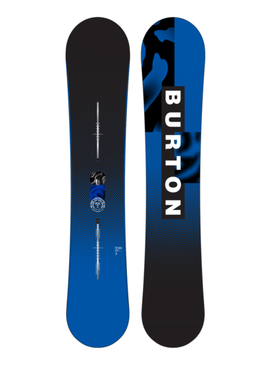
Burton Ripcord
偏软好上手 · 全山通用 · 入门经典
¥2,800 参考
★4.71.2k 人推荐
新手第一块板，我会优先看它。闭眼入，最不打击信心的一块。
- 不容易突然摔提及 88%：板边圆钝，新手那种「毫无预兆栽跟头」会少很多。
- 板软、好学提及 82%：换刃省力，从落叶飘到连着转弯，上手特别快。
- 大牌、保值提及 65%：固定器随便配都能装，将来换板二手也好出。
唯一缺点：偏软，滑到高级道想飙速会嫌它「跟不上」，一般用 1.5–2 季就想升级了。
滑了三季的老手
♡ 2,450
"我第一块板就是 Ripcord，从连续落叶飘练到换刃，用了两个雪季才换板。入门板不需要好，需要"不打击信心""
教练的建议
♡ 1,890
"新手买板最常犯的错就是一步到位买进阶板。硬板确实高速更稳，但你还没到需要"稳"的阶段，先学会转弯再说"
🏂 想省钱 / 想玩公园？看这两块 懂行
这两块各有更擅长的方向，也各有一条短板：
预算友好Nitro Prime
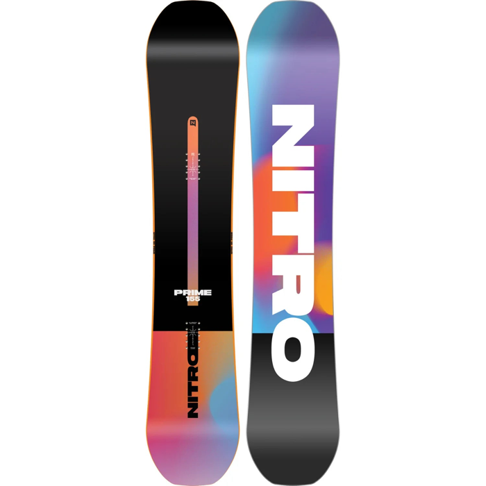
Nitro Prime
软硬适中 · 全山通用 · 便宜好用
¥1,900 参考
★4.6720 人推荐
更便宜、也更耐用一点。它比 Ripcord 稍硬，上手没那么「无脑」，但也正因为硬一点，支撑更足，滑好了也不会太快嫌它软。图省钱、想一块板多用几年就选它。缺点是滑起来速度一般，没有哪项特别突出。
想玩公园Ride Agenda
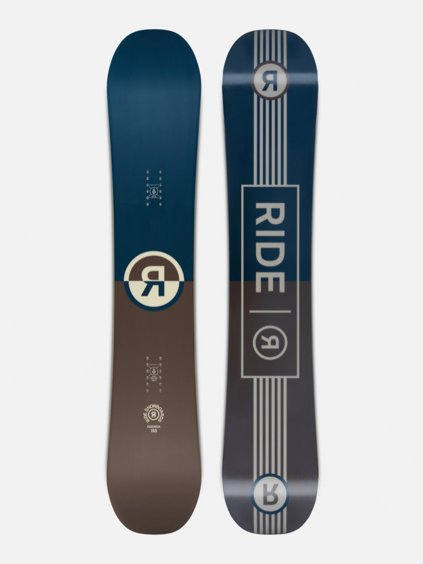
Ride Agenda
头尾对称 · 软硬适中 · 偏公园
¥2,200 参考
★4.6890 人推荐
正着倒着都能滑、脚下更弹的一块。想往公园、玩花活方向发展就选它。缺点是比纯软板稍微难压一点，头几天更费劲。
🎯 按需求还能看这些 懂行
下面按不同需求分了几类，对号入座：
- 想专练花式 / 公园：Rome Mechanic🔍、CAPiTA Pathfinder🔍，板子更软更灵活，做跳跃、压板这些花式动作更顺手；Rossignol Sawblade🔍 也偏这类，偏硬一点，适合会滑之后再玩花活。
- 女生第一块板：Burton Stylus🔍、Salomon Lotus🔍、Nitro Lectra🔍，轻、好控、不容易摔。
- 已经会换刃、想进阶：K2 Raygun🔍、CAPiTA Outerspace Living🔍，板子更有支撑，适合认真练。
📌 一句话总结 懂我有判断
想一块稳妥全能、用两季再换 → Burton Ripcord，闭眼入。
预算有限、又想能陪你进阶一阵 → Nitro Prime，最划算。
想往公园 / 平花发展 → Ride Agenda。
小提醒：固定器和雪鞋比板更影响脚感，别把预算全砸在板上。
告诉我你的身高体重、预算、主要想滑雪道还是玩公园，我帮你选到具体型号和尺寸。懂我
内容由 AI 生成 · 综合小红书真人雪板测评笔记
Burton Ripcord怎么样？适合从初级往进阶过渡吗？
综合 98 篇真人使用反馈
入门到初级进阶完全够用，但别指望它陪你到高级。Ripcord 的定位就是「学会滑雪」这个阶段的最佳搭档，换刃、连续弯、简单小跳台都没问题，但高速大回转会明显感觉板子软、抓不住雪。懂行有判断
🏂
Burton Ripcord
Flat Top 板型 · 偏软 · 全山入门 · 木芯减震
¥2,800
★4.7分1.2k 人推荐
📊 大家怎么评价 真实
4个值得入手的理由
✓Flat Top 板型容错高，换刃学习曲线平滑🔥 提及 88%
✓软硬适中偏软，摔了不容易伤膝盖🔥 提及 82%
✓Burton 品牌，固定器兼容性好、二手保值提及 65%
✓能覆盖从零基础到中级的全过程提及 58%
2个要注意的地方
✗高速（40km/h+）时板头会抖，刃感不足提及 45%
✗想玩公园 jib 的话偏硬了，不够弹提及 30%
🔄 什么时候该换板 懂我懂行
判断标准很简单：如果你在中高级道上觉得"板子跟不上我了"，高速刃感不足、颠簸路段弹不回来，就是该换的时候了。大多数人用 Ripcord 1.5–2 个雪季会到这个临界点。
用了两季换板的人
♡ 1,670
"第一季从落叶飘到换刃，第二季开始走黑道，明显感觉板子软了。换了 Custom 之后高速稳太多了。Ripcord 完成了它的使命"
8/ 10★★★★☆AI 总结
入门到初级进阶最稳的选择。容错高、品牌靠谱、二手好出。不要期待它是"一步到位"的板，它的价值就是帮你用最低的试错成本学会滑雪。学会了再按自己的风格选进阶板。
基于 98 篇小红书真人使用反馈 · 210 条评论综合
从零开始学单板：放心入，1–2 季内你不会嫌它差。
已经会换刃、想学刻滑：还能再用一季，但高速时会觉得软。
已经滑黑道了：该换了，看看 Burton Custom 或 Process。
不确定自己会不会坚持：Ripcord 的二手残值不错，不亏。
告诉我你现在的水平和主要玩法，我帮你判断它够不够用。懂我
内容由 AI 生成 · 综合小红书真人使用反馈
Burton Ripcord和Ride Agenda选哪个？主要玩全山
综合 112 篇真人对比体验
主要玩全山选 Ripcord，想往公园发展选 Agenda。懂我有判断
🔍 本质差异就一点 懂行
方向性 vs 对称，决定你怎么滑
Ripcord 是方向性板，板头比板尾长，天生适合往一个方向冲。全山巡航更稳，刻滑入弯更顺，但反脚滑会别扭。Agenda 是对称板，正反完全一样，Switch 和正常滑手感一致。公园里正反切换、落地 fakie 需要这种板，但高速巡航比方向性板差一点。
Ripcord 是方向性板，板头比板尾长，天生适合往一个方向冲。全山巡航更稳，刻滑入弯更顺，但反脚滑会别扭。Agenda 是对称板，正反完全一样，Switch 和正常滑手感一致。公园里正反切换、落地 fakie 需要这种板，但高速巡航比方向性板差一点。
💬 买家口碑 真实
Burton Ripcord78 人讨论
Ride Agenda56 人讨论
📊 详细参数对比 懂行
| Burton Ripcord | Ride Agenda | |
|---|---|---|
| 板型 | Flat Top（方向性） | Twin（对称） |
| 全山适配 | ★★★★★ | ★★★★☆ |
| 公园玩法 | ★★★☆☆ | ★★★★★ |
| 高速稳定性 | 中等偏上 | 中等 |
| 反滑 | 一般 | 优秀 |
| 参考价 | ¥2,800 | ¥2,200 |
🧭 按你的情况选 懂我有判断
主要全山巡航、练刻滑→Ripcord
想学公园、跳台、反脚滑→Agenda
全山为主、偶尔进公园→Agenda 省 ¥600
不确定自己喜欢什么→Ripcord 适用面更广
告诉我你的水平和主要玩法，我帮你做最终决定。懂我
内容由 AI 生成 · 综合小红书真人对比体验
买雪板最易踩的坑是什么？
综合 203 篇买板踩坑帖
新手买板最大的误区：以为"贵的=好的"，其实是"合适的=好的"。大部分踩坑都是觉得省了钱或一步到位了，其实花了冤枉钱。懂行
🧠 先建立 3 个核心认知 懂行
新手别碰硬板，"进阶"不是"更好"
进阶板不是"更好"，是"更硬"。新手用硬板学不出来，还容易受伤。等滑够 20 天再考虑换板
进阶板不是"更好"，是"更硬"。新手用硬板学不出来，还容易受伤。等滑够 20 天再考虑换板
鞋和固定器比板重要，别把预算全砸在板上
脚感 70% 来自鞋和固定器，板只占 30%。预算全砸在板上、鞋买最便宜的是最常见的错误
脚感 70% 来自鞋和固定器，板只占 30%。预算全砸在板上、鞋买最便宜的是最常见的错误
买错板型比买错牌子影响大
Camber、Rocker、Flat 各有用途。新手选 Flat 或 Rocker，别碰 Camber
Camber、Rocker、Flat 各有用途。新手选 Flat 或 Rocker，别碰 Camber
⚠️ 五大经典坑 懂行真实
一步到位买进阶板
比如 Burton Custom 这类硬板，新手根本压不住，每次换刃都打滑
比如 Burton Custom 这类硬板，新手根本压不住，每次换刃都打滑
只看板、忽略鞋和固定器
合理比例是板 40% + 固定器 25% + 鞋 35%
合理比例是板 40% + 固定器 25% + 鞋 35%
按身高选长度
体重才是关键。同样 175cm，55kg 和 70kg 的人板长差 5cm
体重才是关键。同样 175cm，55kg 和 70kg 的人板长差 5cm
二手捡漏来路不明的板
看不出芯材断裂和暗伤，省了几百块可能一个赛季就报废
看不出芯材断裂和暗伤，省了几百块可能一个赛季就报废
不了解板型就下单
新手选 Flat 或 Rocker（比如 Burton Ripcord），别碰 Camber，卡刃容易摔
新手选 Flat 或 Rocker（比如 Burton Ripcord），别碰 Camber，卡刃容易摔
💬 买板圈在聊什么 真实
高频讨论话题203 篇笔记
告诉我你的预算和想怎么玩，我帮你从零开始规划装备。懂我
内容由 AI 生成 · 综合小红书真人买板踩坑经验